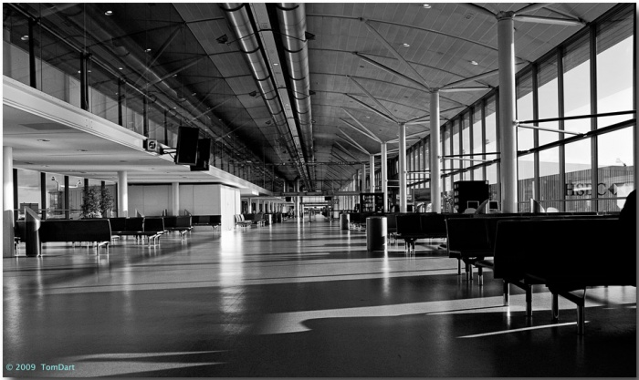

Linington Nature Reserve
You are currently on the "At the Reserve" page.
The Reserve contains a field, large and small ponds, and some woodland. Frogs spawn in the small pond while the large pond contains several varieties of fish as well as yellow irises and reeds.Many birds also breed in the reserve: avocet, black swans,sedge warblers and woodpeckers are a small selection. Rabbits and red squirrels abound, and the field is grazed by water buffalo.
Click on the images below to find out more about our animals: